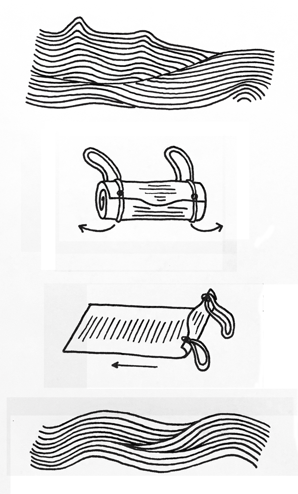

Your burial is customized for you!
Be aware that this object is to accompany you everywhere.
You are responsible for your last minutes.
If you are stateless,
or you don’t feel like you belong to any land, we advise you to carry your own burial on your back.
In the time of trouble, we know you are going to die alone! what you have to do is to be prepared.
Follow the steps below of how to use the burial:

1. When you feel it’s time, go toward the closest open water for you.
If you are in Denmark don’t worry, water is everywhere.
2. Take the burial off your shoulders and place it on solid ground,
it's easier to unwrap it by sliding the straps out both sides.
3. You can choose to be naked or fully clothed, who cares? Right!
It’s a good idea to jump in the water and unroll the burial then
lay down on it while in the water.
4. Try to push yourself away from the land,
away from countries, identities and white supremacy,
sit and watch yourself finally relaxing for your last trip.♥